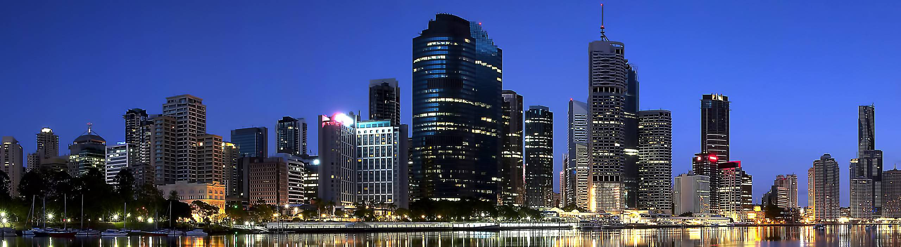

Welkom
Welkom op mijn website over de steden die ik ooit graag wil bezoeken.
Mijn naam is Tamara Udijana en ik hou van reizen. Ik hou ervan om naar historische Europese steden te reizen, maar ook om moderne steden te bezoeken buiten Europa zoals: Tokyo, Seoul en New York City. Het is mijn droom om ooit een wereldreis te maken en deze steden zijn zeker de eerste steden die ik wil bezoeken wanneer ik mijn wereldreis begin. Natuurlijk gaat het nog wel een tijdje duren, maar ik zal blijven sparen en erover dromen en wie weet worden mijn dromen waar gemaakt.